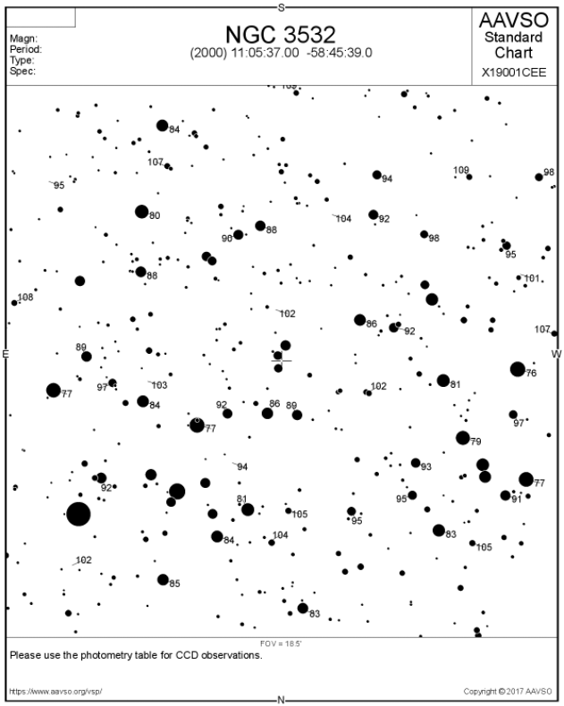
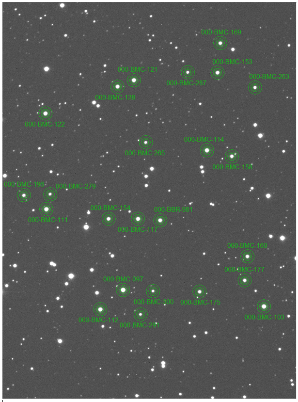
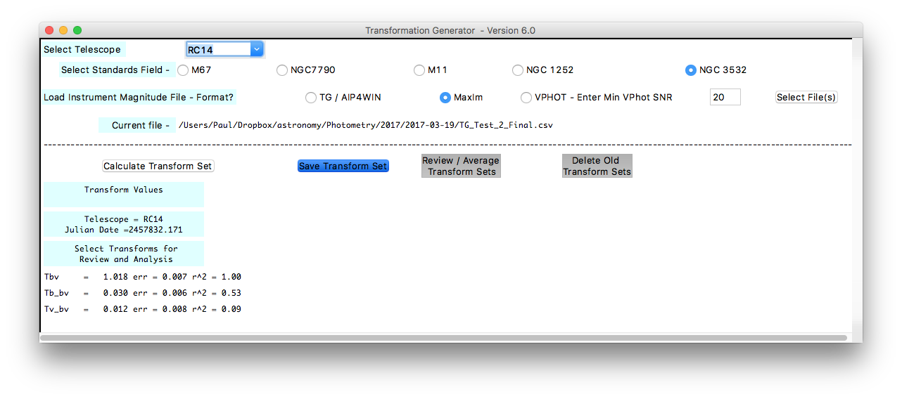
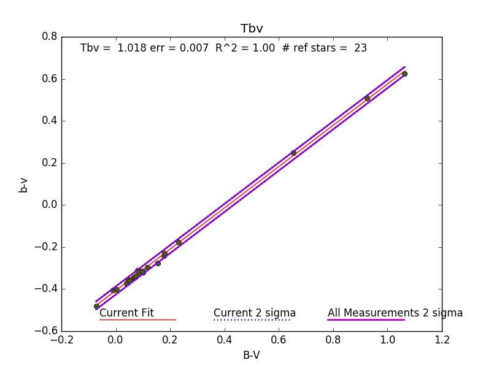
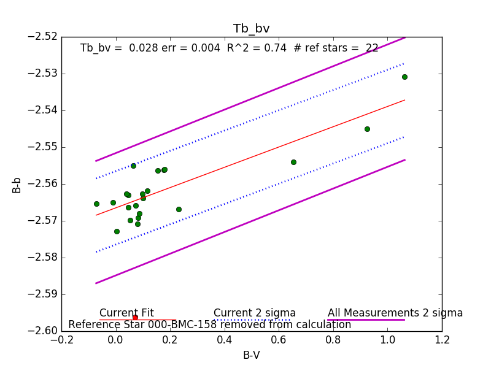

Changes in the optical train at Shenton Park Observatory together with a renewed 2017 AAVSO transform campaign have prompted revisiting photometric B and V band transformation coefficients. The addition of an AAVSO sequence for the southern hemisphere cluster NGC 3532, together with the availability of new tools to streamline computations has also triggered re-examination of the process, completed over the course of one evening.
Data Acquisition
NGC 3532 was imaged on the 19th March 2017 with the cluster near transit.
10 x 3 second exposures through V and 10 x 8 second exposures through B were acquired in succession. Images were calibrated (bias, dark, flat) in the normal manner.
Reference Information
A comparison chart of the NGC 3532 field was generated using the AAVSO’s Variable Star Plotter, specifying the centre coordinates for NGC 3532 and choosing standard field.

The associated photometry table (not shown) includes an AAVSO Unique Identifier (AUID) for the sequence. Tagged stars must be labelled with the AUID in order for Transform Generator to work.
Deriving instrumental magnitudes
Aperture photometry was undertaken using MaxIM DL – one of the applications directly supported by Transform Generator. All B & V images were processed simultaneously using the Photometry tool in MaxIM DL. The first star was tagged as a ‘reference star’ prompting entry for published B and V band magnitudes. All other stars were tagged as as ‘new objects’ for which no magnitudes are specified. Once complete, the CSV file produced by MaxIM DL was configured to include instrumental magnitudes - required by Transform Generator.

Transform Generator
Transform generator was installed and configured as per the instructions on the AAVSO web site. It uses Python which requires additional installation. Once installed, the process is self-explanatory:
- Configure the standards field and file format dialogues
- Choose the CSV file (ie, the output from MaxIM DL)
- Select “Calculate Transform Set”

Each of the computed transforms appears and can be reviewed graphically by selecting them in turn. Data outliers can be deactivated from the plot with the resulting transforms and errors immediately updated.


The software also provides the means to manage and average historical sets.
Applying transforms to photometric measures
Transforms can be applied manually (spreadsheet means) using the standard methodology. Transform Applier is another application available through AAVSO that facilitates the process of applying transforms to AAVSO formatted data.